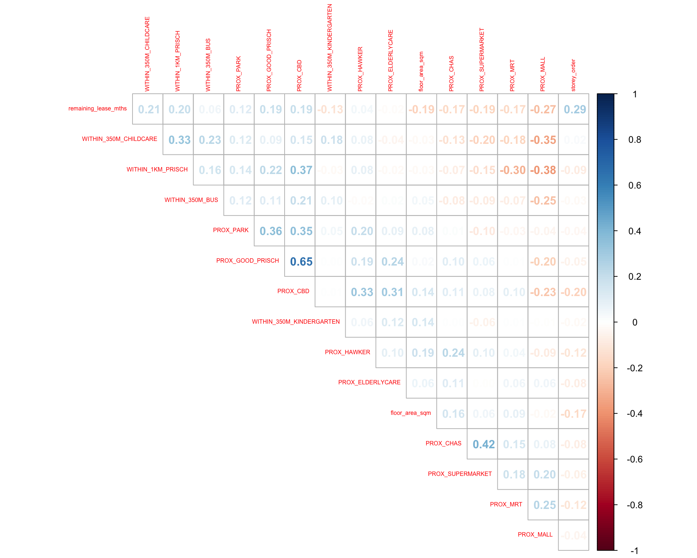
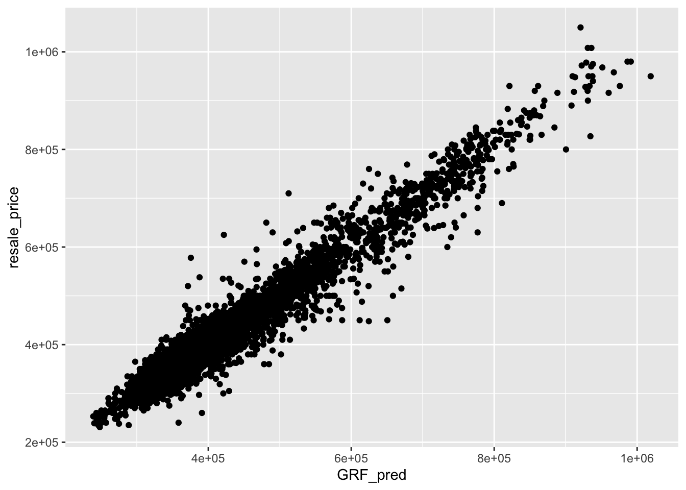

# Create/load all required packages in one shot
pacman::p_load(
sf, # spatial vector data (simple features)
spdep, # spatial dependence utilities (used by some workflows)
GWmodel, # Geographically Weighted Regression
SpatialML, # Geographically Weighted Random Forest (grf)
tmap, # cartography (not central here but part of the stack)
rsample, # train/test splitting (tidymodels)
Metrics, # RMSE and other metrics
tidyverse # dplyr, ggplot2, readr, purrr, etc.
)Hands-on Ex08
14 Geographically Weighted Predictive Models
This practical reproduces the complete workflow to build geographically weighted predictive models (GWR and Geographically Weighted Random Forest), alongside non-spatial baselines (Multiple Linear Regression and Random Forest). Follow each subsection in order.
14.1 Overview
Predictive modelling estimates an unknown outcome (e.g., resale price) from known predictors (e.g., floor area, amenities). When observations are georeferenced, relationships may vary across space due to infrastructure, socio-economic and environmental context. Geographically weighted models allow coefficients or model structure to change by location, capturing local effects that global models miss.
By the end, we will:
- prepare train/test datasets with proper sampling,
- check collinearity,
- fit and save MLR, GWR, RF, and GW-RF models,
- generate out-of-sample predictions,
- compute RMSE and visualise prediction quality.
14.2 The Data
we will work with:
- Aspatial table: HDB resale transactions (CSV → converted to sf during preprocessing).
- Geospatial layers: URA 2014 Master Plan Planning Subzones (polygon sf).
- Locational factors with coordinates: eldercare, hawker centres, parks, supermarkets,
- MRT/LRT stations, bus stops, kindergartens, childcare (shapefile/GeoJSON).
- Locational factors without coordinates: CBD centroid (derived), shopping malls, primary school rankings (CSV/other).
14.3 Installing and Loading R Packages
14.4 Preparing Data
14.4.1 Reading data file to rds
# Read the prepared modelling dataset (sf object)
mdata <- readr::read_rds("/Users/cktan/Desktop/SMU/01_Geospatial Analytics (ISSS626)/Hands-on_Ex/Hands-on_Ex08/data/rawdata/mdata.rds")14.4.2 Data Sampling
The entire data are split into training and test data sets with 65% and 35% respectively by using initial_split() of rsample package. rsample is one of the package of tigymodels.
# Set seed to make the split reproducible
set.seed(1234)
# Split into 65% training and 35% testing using rsample
resale_split <- rsample::initial_split(mdata, prop = 6.5/10)
# Extract the two partitions
train_data <- rsample::training(resale_split)
test_data <- rsample::testing(resale_split)# Persist the splits for reuse
readr::write_rds(train_data, "/Users/cktan/Desktop/SMU/01_Geospatial Analytics (ISSS626)/Hands-on_Ex/Hands-on_Ex08/data/model/train_data.rds")
readr::write_rds(test_data, "/Users/cktan/Desktop/SMU/01_Geospatial Analytics (ISSS626)/Hands-on_Ex/Hands-on_Ex08/data/model/test_data.rds")14.5 Computing Correlation Matrix
Before loading the predictors into a predictive model, it is always a good practice to use correlation matrix to examine if there is sign of multicollinearity.
# Remove geometry to compute numeric correlations only
mdata_nogeo <- mdata %>% sf::st_drop_geometry()
# Draw an upper-triangle correlation matrix with numbers
corrplot::corrplot(
cor(mdata_nogeo[, 2:17]), # adjust columns to our numeric predictors
diag = FALSE, # do not draw the diagonal
order = "AOE", # sort for visual clarity
tl.pos = "td", # variable labels on top diagonal
tl.cex = 0.5, # smaller labels
method = "number", # show correlation values
type = "upper" # only the upper triangle
)
Note
If all absolute correlations are below ~0.8, severe multicollinearity is unlikely.
14.6 Retrieving the Stored Data
# Reload saved splits when resuming work
train_data <- readr::read_rds("/Users/cktan/Desktop/SMU/01_Geospatial Analytics (ISSS626)/Hands-on_Ex/Hands-on_Ex08/data/model/train_data.rds")
test_data <- readr::read_rds("/Users/cktan/Desktop/SMU/01_Geospatial Analytics (ISSS626)/Hands-on_Ex/Hands-on_Ex08/data/model/test_data.rds")14.7 Building a Non-Spatial Multiple Linear Regression
# Fit a global (non-spatial) linear regression as a baseline
price_mlr <- lm(
resale_price ~ floor_area_sqm +
storey_order + remaining_lease_mths +
PROX_CBD + PROX_ELDERLYCARE + PROX_HAWKER +
PROX_MRT + PROX_PARK + PROX_MALL +
PROX_SUPERMARKET +
WITHIN_350M_KINDERGARTEN + WITHIN_350M_CHILDCARE +
WITHIN_350M_BUS + WITHIN_1KM_PRISCH,
data = train_data
)
# Inspect coefficients and diagnostics
summary(price_mlr)
Call:
lm(formula = resale_price ~ floor_area_sqm + storey_order + remaining_lease_mths +
PROX_CBD + PROX_ELDERLYCARE + PROX_HAWKER + PROX_MRT + PROX_PARK +
PROX_MALL + PROX_SUPERMARKET + WITHIN_350M_KINDERGARTEN +
WITHIN_350M_CHILDCARE + WITHIN_350M_BUS + WITHIN_1KM_PRISCH,
data = train_data)
Residuals:
Min 1Q Median 3Q Max
-205193 -39120 -1930 36545 472355
Coefficients:
Estimate Std. Error t value Pr(>|t|)
(Intercept) 107601.073 10601.261 10.150 < 2e-16 ***
floor_area_sqm 2780.698 90.579 30.699 < 2e-16 ***
storey_order 14299.298 339.115 42.167 < 2e-16 ***
remaining_lease_mths 344.490 4.592 75.027 < 2e-16 ***
PROX_CBD -16930.196 201.254 -84.124 < 2e-16 ***
PROX_ELDERLYCARE -14441.025 994.867 -14.516 < 2e-16 ***
PROX_HAWKER -19265.648 1273.597 -15.127 < 2e-16 ***
PROX_MRT -32564.272 1744.232 -18.670 < 2e-16 ***
PROX_PARK -5712.625 1483.885 -3.850 0.000119 ***
PROX_MALL -14717.388 2007.818 -7.330 2.47e-13 ***
PROX_SUPERMARKET -26881.938 4189.624 -6.416 1.46e-10 ***
WITHIN_350M_KINDERGARTEN 8520.472 632.812 13.464 < 2e-16 ***
WITHIN_350M_CHILDCARE -4510.650 354.015 -12.741 < 2e-16 ***
WITHIN_350M_BUS 813.493 222.574 3.655 0.000259 ***
WITHIN_1KM_PRISCH -8010.834 491.512 -16.298 < 2e-16 ***
---
Signif. codes: 0 '***' 0.001 '**' 0.01 '*' 0.05 '.' 0.1 ' ' 1
Residual standard error: 61650 on 10320 degrees of freedom
Multiple R-squared: 0.7373, Adjusted R-squared: 0.737
F-statistic: 2069 on 14 and 10320 DF, p-value: < 2.2e-16# Save the fitted model
readr::write_rds(price_mlr, "/Users/cktan/Desktop/SMU/01_Geospatial Analytics (ISSS626)/Hands-on_Ex/Hands-on_Ex08/data/model/price_mlr.rds")14.8 GWR Predictive Method
In this section, we will learn how to calibrate a model to predict HDB resale price by using geographically weighted regression method of GWmodel package.
14.8.1 Computing adaptive bandwidth (CV)
# Determine optimal adaptive bandwidth (in neighbors) using CV
bw_adaptive <- GWmodel::bw.gwr(
formula = resale_price ~ floor_area_sqm +
storey_order + remaining_lease_mths +
PROX_CBD + PROX_ELDERLYCARE + PROX_HAWKER +
PROX_MRT + PROX_PARK + PROX_MALL +
PROX_SUPERMARKET +
WITHIN_350M_KINDERGARTEN + WITHIN_350M_CHILDCARE +
WITHIN_350M_BUS + WITHIN_1KM_PRISCH,
data = train_data, # training sf
approach = "CV", # cross-validation
kernel = "gaussian", # Gaussian kernel
adaptive = TRUE, # adaptive neighbor count
longlat = FALSE # data are in projected meters
)Take a cup of tea and have a break, it will take a few minutes.
-----A kind suggestion from GWmodel development group
Adaptive bandwidth: 6395 CV score: 3.60536e+13
Adaptive bandwidth: 3960 CV score: 3.320316e+13
Adaptive bandwidth: 2455 CV score: 2.928339e+13
Adaptive bandwidth: 1524 CV score: 2.550957e+13
Adaptive bandwidth: 950 CV score: 1.95632e+13
Adaptive bandwidth: 593 CV score: 1.58347e+13
Adaptive bandwidth: 375 CV score: 1.310042e+13
Adaptive bandwidth: 237 CV score: 1.113152e+13
Adaptive bandwidth: 155 CV score: 9.572037e+12
Adaptive bandwidth: 101 CV score: 8.457003e+12
Adaptive bandwidth: 71 CV score: 7.605058e+12
Adaptive bandwidth: 49 CV score: 6.966278e+12
Adaptive bandwidth: 38 CV score: 8.841916e+12
Adaptive bandwidth: 58 CV score: 7.275234e+12
Adaptive bandwidth: 45 CV score: 6.871966e+12
Adaptive bandwidth: 41 CV score: 6.793327e+12
Adaptive bandwidth: 40 CV score: 6.780974e+12
Adaptive bandwidth: 38 CV score: 8.841916e+12
Adaptive bandwidth: 40 CV score: 6.780974e+12 # Persist the chosen bandwidth (e.g., result may be 40 neighbors)
readr::write_rds(bw_adaptive, "/Users/cktan/Desktop/SMU/01_Geospatial Analytics (ISSS626)/Hands-on_Ex/Hands-on_Ex08/data/model/bw_adaptive.rds")14.8.2 Constructing the adaptive bandwidth GWR model
First, let us call the save bandwidth by using the code chunk below.
# Reload bandwidth when needed
bw_adaptive <- readr::read_rds("/Users/cktan/Desktop/SMU/01_Geospatial Analytics (ISSS626)/Hands-on_Ex/Hands-on_Ex08/data/model/bw_adaptive.rds")Now, we can go ahead to calibrate the gwr-based hedonic pricing model by using adaptive bandwidth and Gaussian kernel as shown in the code chunk below.
# Calibrate GWR using the selected adaptive bandwidth
gwr_adaptive <- GWmodel::gwr.basic(
formula = resale_price ~ floor_area_sqm +
storey_order + remaining_lease_mths +
PROX_CBD + PROX_ELDERLYCARE + PROX_HAWKER +
PROX_MRT + PROX_PARK + PROX_MALL +
PROX_SUPERMARKET +
WITHIN_350M_KINDERGARTEN + WITHIN_350M_CHILDCARE +
WITHIN_350M_BUS + WITHIN_1KM_PRISCH,
data = train_data, # training sf
bw = bw_adaptive, # adaptive neighbors (numeric)
kernel = "gaussian", # kernel shape
adaptive = TRUE, # use adaptive bandwidth
longlat = FALSE # projected coordinates
)
# Save the fitted GWR object
readr::write_rds(gwr_adaptive, "/Users/cktan/Desktop/SMU/01_Geospatial Analytics (ISSS626)/Hands-on_Ex/Hands-on_Ex08/data/model/gwr_adaptive.rds")Now, we can go ahead to calibrate the gwr-based hedonic pricing model by using adaptive bandwidth and Gaussian kernel as shown in the code chunk below.
14.8.3 Retrieve GWR output object
The code chunk below will be used to retrieve the save gwr model object.
# Reload GWR model when resuming work
gwr_adaptive <- readr::read_rds("/Users/cktan/Desktop/SMU/01_Geospatial Analytics (ISSS626)/Hands-on_Ex/Hands-on_Ex08/data/model/gwr_adaptive.rds")The code below can be used to display the model output.
# Printing the object shows the model summary header and timings
gwr_adaptive ***********************************************************************
* Package GWmodel *
***********************************************************************
Program starts at: 2025-10-24 16:35:37.612412
Call:
GWmodel::gwr.basic(formula = resale_price ~ floor_area_sqm +
storey_order + remaining_lease_mths + PROX_CBD + PROX_ELDERLYCARE +
PROX_HAWKER + PROX_MRT + PROX_PARK + PROX_MALL + PROX_SUPERMARKET +
WITHIN_350M_KINDERGARTEN + WITHIN_350M_CHILDCARE + WITHIN_350M_BUS +
WITHIN_1KM_PRISCH, data = train_data, bw = bw_adaptive, kernel = "gaussian",
adaptive = TRUE, longlat = FALSE)
Dependent (y) variable: resale_price
Independent variables: floor_area_sqm storey_order remaining_lease_mths PROX_CBD PROX_ELDERLYCARE PROX_HAWKER PROX_MRT PROX_PARK PROX_MALL PROX_SUPERMARKET WITHIN_350M_KINDERGARTEN WITHIN_350M_CHILDCARE WITHIN_350M_BUS WITHIN_1KM_PRISCH
Number of data points: 10335
***********************************************************************
* Results of Global Regression *
***********************************************************************
Call:
lm(formula = formula, data = data)
Residuals:
Min 1Q Median 3Q Max
-205193 -39120 -1930 36545 472355
Coefficients:
Estimate Std. Error t value Pr(>|t|)
(Intercept) 107601.073 10601.261 10.150 < 2e-16 ***
floor_area_sqm 2780.698 90.579 30.699 < 2e-16 ***
storey_order 14299.298 339.115 42.167 < 2e-16 ***
remaining_lease_mths 344.490 4.592 75.027 < 2e-16 ***
PROX_CBD -16930.196 201.254 -84.124 < 2e-16 ***
PROX_ELDERLYCARE -14441.025 994.867 -14.516 < 2e-16 ***
PROX_HAWKER -19265.648 1273.597 -15.127 < 2e-16 ***
PROX_MRT -32564.272 1744.232 -18.670 < 2e-16 ***
PROX_PARK -5712.625 1483.885 -3.850 0.000119 ***
PROX_MALL -14717.388 2007.818 -7.330 2.47e-13 ***
PROX_SUPERMARKET -26881.938 4189.624 -6.416 1.46e-10 ***
WITHIN_350M_KINDERGARTEN 8520.472 632.812 13.464 < 2e-16 ***
WITHIN_350M_CHILDCARE -4510.650 354.015 -12.741 < 2e-16 ***
WITHIN_350M_BUS 813.493 222.574 3.655 0.000259 ***
WITHIN_1KM_PRISCH -8010.834 491.512 -16.298 < 2e-16 ***
---Significance stars
Signif. codes: 0 '***' 0.001 '**' 0.01 '*' 0.05 '.' 0.1 ' ' 1
Residual standard error: 61650 on 10320 degrees of freedom
Multiple R-squared: 0.7373
Adjusted R-squared: 0.737
F-statistic: 2069 on 14 and 10320 DF, p-value: < 2.2e-16
***Extra Diagnostic information
Residual sum of squares: 3.922202e+13
Sigma(hat): 61610.08
AIC: 257320.2
AICc: 257320.3
BIC: 247249
***********************************************************************
* Results of Geographically Weighted Regression *
***********************************************************************
*********************Model calibration information*********************
Kernel function: gaussian
Adaptive bandwidth: 40 (number of nearest neighbours)
Regression points: the same locations as observations are used.
Distance metric: Euclidean distance metric is used.
****************Summary of GWR coefficient estimates:******************
Min. 1st Qu. Median 3rd Qu.
Intercept -3.2594e+08 -4.7727e+05 -8.3004e+03 5.5025e+05
floor_area_sqm -2.8714e+04 1.4475e+03 2.3011e+03 3.3900e+03
storey_order 3.3186e+03 8.5899e+03 1.0826e+04 1.3397e+04
remaining_lease_mths -1.4431e+03 2.6063e+02 3.9048e+02 5.2865e+02
PROX_CBD -1.0837e+07 -5.7697e+04 -1.3787e+04 2.6552e+04
PROX_ELDERLYCARE -3.2291e+07 -4.0643e+04 1.0562e+04 6.1054e+04
PROX_HAWKER -2.3985e+08 -5.1365e+04 3.0026e+03 6.4287e+04
PROX_MRT -1.1660e+07 -1.0488e+05 -4.9373e+04 5.1037e+03
PROX_PARK -6.5961e+06 -4.8671e+04 -8.8128e+02 5.3498e+04
PROX_MALL -1.8112e+07 -7.4238e+04 -1.3982e+04 4.9779e+04
PROX_SUPERMARKET -4.5761e+06 -6.3461e+04 -1.7429e+04 3.5616e+04
WITHIN_350M_KINDERGARTEN -4.1881e+05 -6.0040e+03 9.0209e+01 4.7127e+03
WITHIN_350M_CHILDCARE -1.0273e+05 -2.2375e+03 2.6668e+02 2.6388e+03
WITHIN_350M_BUS -1.1757e+05 -1.4719e+03 1.1626e+02 1.7584e+03
WITHIN_1KM_PRISCH -6.6465e+05 -5.5959e+03 2.6916e+02 5.7500e+03
Max.
Intercept 1.6493e+08
floor_area_sqm 5.0907e+04
storey_order 2.9537e+04
remaining_lease_mths 1.8119e+03
PROX_CBD 2.2489e+07
PROX_ELDERLYCARE 8.2444e+07
PROX_HAWKER 5.9654e+06
PROX_MRT 2.0189e+08
PROX_PARK 1.5224e+07
PROX_MALL 1.0443e+07
PROX_SUPERMARKET 3.8330e+06
WITHIN_350M_KINDERGARTEN 6.6799e+05
WITHIN_350M_CHILDCARE 1.0802e+05
WITHIN_350M_BUS 3.7313e+04
WITHIN_1KM_PRISCH 5.0262e+05
************************Diagnostic information*************************
Number of data points: 10335
Effective number of parameters (2trace(S) - trace(S'S)): 1730.101
Effective degrees of freedom (n-2trace(S) + trace(S'S)): 8604.899
AICc (GWR book, Fotheringham, et al. 2002, p. 61, eq 2.33): 238871.8
AIC (GWR book, Fotheringham, et al. 2002,GWR p. 96, eq. 4.22): 237036.9
BIC (GWR book, Fotheringham, et al. 2002,GWR p. 61, eq. 2.34): 238209
Residual sum of squares: 4.829177e+12
R-square value: 0.9676571
Adjusted R-square value: 0.9611535
***********************************************************************
Program stops at: 2025-10-24 16:36:34.25672 14.8.4 Computing adaptive bandwidth for the test data
# Some workflows also derive a CV bandwidth using the test sf
gwr_bw_test_adaptive <- GWmodel::bw.gwr(
formula = resale_price ~ floor_area_sqm +
storey_order + remaining_lease_mths +
PROX_CBD + PROX_ELDERLYCARE + PROX_HAWKER +
PROX_MRT + PROX_PARK + PROX_MALL +
PROX_SUPERMARKET +
WITHIN_350M_KINDERGARTEN + WITHIN_350M_CHILDCARE +
WITHIN_350M_BUS + WITHIN_1KM_PRISCH,
data = test_data,
approach = "CV",
kernel = "gaussian",
adaptive = TRUE,
longlat = FALSE
)Take a cup of tea and have a break, it will take a few minutes.
-----A kind suggestion from GWmodel development group
Adaptive bandwidth: 3447 CV score: 1.902155e+13
Adaptive bandwidth: 2138 CV score: 1.752645e+13
Adaptive bandwidth: 1328 CV score: 1.556299e+13
Adaptive bandwidth: 828 CV score: 1.357498e+13
Adaptive bandwidth: 518 CV score: 1.030751e+13
Adaptive bandwidth: 327 CV score: 8.348364e+12
Adaptive bandwidth: 208 CV score: 6.860544e+12
Adaptive bandwidth: 135 CV score: 5.969504e+12
Adaptive bandwidth: 89 CV score: 5.242221e+12
Adaptive bandwidth: 62 CV score: 4.742767e+12
Adaptive bandwidth: 43 CV score: 4.357839e+12
Adaptive bandwidth: 34 CV score: 4.125848e+12
Adaptive bandwidth: 25 CV score: 4.056699e+12
Adaptive bandwidth: 23 CV score: 4.236349e+13
Adaptive bandwidth: 30 CV score: 4.074906e+12
Adaptive bandwidth: 25 CV score: 4.056699e+12 # Save the test-set bandwidth too (for reference)
readr::write_rds(gwr_bw_test_adaptive, "/Users/cktan/Desktop/SMU/01_Geospatial Analytics (ISSS626)/Hands-on_Ex/Hands-on_Ex08/data/model/gwr_bw_test_adaptive.rds")14.8.5 Computing predicted values for the test data
# gwr_pred <- gwr.predict(
# formula = resale_price ~ floor_area_sqm +
# storey_order + remaining_lease_mths +
# PROX_CBD + PROX_ELDERLYCARE + PROX_HAWKER +
# PROX_MRT + PROX_PARK + PROX_MALL +
# PROX_SUPERMARKET + WITHIN_350M_KINDERGARTEN +
# WITHIN_350M_CHILDCARE + WITHIN_350M_BUS +
# WITHIN_1KM_PRISCH,
# data=train_data,
# predictdata = test_data,
# bw=40,
# kernel = 'gaussian',
# adaptive=TRUE,
# longlat = FALSE)
#
# # Save predictions (list-like object)
# readr::write_rds(gwr_pred, "/Users/cktan/Desktop/SMU/01_Geospatial Analytics (ISSS626)/Hands-on_Ex/Hands-on_Ex08/data/model/gwr_pred.rds")14.9 Calibrating Random Forest Model (global / non-spatial)
In this section, we will learn how to calibrate a model to predict HDB resale price by using random forest function of ranger package.
14.9.1 Preparing coordinates data
The code chunk below extract the x,y coordinates of the full, training and test data sets.
# Extract XY matrices for convenience (sf → numeric matrix with X,Y)
coords <- sf::st_coordinates(mdata)
coords_train <- sf::st_coordinates(train_data)
coords_test <- sf::st_coordinates(test_data)Before continue, we write all the output into rds for future used.
# Save coordinates used later by GW-RF
readr::write_rds(coords_train, "/Users/cktan/Desktop/SMU/01_Geospatial Analytics (ISSS626)/Hands-on_Ex/Hands-on_Ex08/data/model/coords_train.rds")
readr::write_rds(coords_test, "/Users/cktan/Desktop/SMU/01_Geospatial Analytics (ISSS626)/Hands-on_Ex/Hands-on_Ex08/data/model/coords_test.rds")14.9.2 Dropping geometry field
First, we will drop geometry column of the sf data.frame by using st_drop_geometry() of sf package.
# Random Forest from ranger expects a data.frame without geometry
train_data_nogeom <- train_data %>% sf::st_drop_geometry()
test_data_nogeom <- test_data %>% sf::st_drop_geometry()14.9.3 Calibrating a non-spatial Random Forest
# Set seed for reproducibility
set.seed(1234)
# Fit a global RF as another baseline model
rf <- ranger::ranger(
formula = resale_price ~ floor_area_sqm +
storey_order + remaining_lease_mths +
PROX_CBD + PROX_ELDERLYCARE + PROX_HAWKER +
PROX_MRT + PROX_PARK + PROX_MALL +
PROX_SUPERMARKET +
WITHIN_350M_KINDERGARTEN + WITHIN_350M_CHILDCARE +
WITHIN_350M_BUS + WITHIN_1KM_PRISCH,
data = train_data_nogeom
)
rf Ranger result
Call:
ranger::ranger(formula = resale_price ~ floor_area_sqm + storey_order + remaining_lease_mths + PROX_CBD + PROX_ELDERLYCARE + PROX_HAWKER + PROX_MRT + PROX_PARK + PROX_MALL + PROX_SUPERMARKET + WITHIN_350M_KINDERGARTEN + WITHIN_350M_CHILDCARE + WITHIN_350M_BUS + WITHIN_1KM_PRISCH, data = train_data_nogeom)
Type: Regression
Number of trees: 500
Sample size: 10335
Number of independent variables: 14
Mtry: 3
Target node size: 5
Variable importance mode: none
Splitrule: variance
OOB prediction error (MSE): 731404460
R squared (OOB): 0.9493789 # Save the RF model
readr::write_rds(rf, "/Users/cktan/Desktop/SMU/01_Geospatial Analytics (ISSS626)/Hands-on_Ex/Hands-on_Ex08/data/model/rf.rds")14.10 Calibrating Geographically Weighted Random Forest (GW-RF)
In this section, we will learn how to calibrate a model to predict HDB resale price by using grf() of SpatialML package.
14.10.1 Calibrating using training data
# Reuse coordinates and no-geometry training input
set.seed(1234)
gwRF_adaptive <- SpatialML::grf(
formula = resale_price ~ floor_area_sqm +
storey_order + remaining_lease_mths +
PROX_CBD + PROX_ELDERLYCARE + PROX_HAWKER +
PROX_MRT + PROX_PARK + PROX_MALL +
PROX_SUPERMARKET +
WITHIN_350M_KINDERGARTEN + WITHIN_350M_CHILDCARE +
WITHIN_350M_BUS + WITHIN_1KM_PRISCH,
dframe = train_data_nogeom, # data.frame without geometry
bw = 40, # neighbor size (consistent with earlier choice)
kernel = "adaptive", # adaptive kernel for local forests
coords = coords_train # matrix of X,Y for training rows
)
Number of Observations: 10335Number of Independent Variables: 14Kernel: Adaptive
Neightbours: 40
--------------- Global ML Model Summary ---------------Ranger result
Call:
ranger(resale_price ~ floor_area_sqm + storey_order + remaining_lease_mths + PROX_CBD + PROX_ELDERLYCARE + PROX_HAWKER + PROX_MRT + PROX_PARK + PROX_MALL + PROX_SUPERMARKET + WITHIN_350M_KINDERGARTEN + WITHIN_350M_CHILDCARE + WITHIN_350M_BUS + WITHIN_1KM_PRISCH, data = train_data_nogeom, num.trees = 500, mtry = 4, importance = "impurity", num.threads = NULL)
Type: Regression
Number of trees: 500
Sample size: 10335
Number of independent variables: 14
Mtry: 4
Target node size: 5
Variable importance mode: impurity
Splitrule: variance
OOB prediction error (MSE): 697593819
R squared (OOB): 0.9517189
Importance: floor_area_sqm storey_order remaining_lease_mths
7.413197e+12 1.538950e+13 2.890637e+13
PROX_CBD PROX_ELDERLYCARE PROX_HAWKER
5.310066e+13 7.285092e+12 5.568548e+12
PROX_MRT PROX_PARK PROX_MALL
7.369745e+12 4.894344e+12 4.223286e+12
PROX_SUPERMARKET WITHIN_350M_KINDERGARTEN WITHIN_350M_CHILDCARE
2.793853e+12 1.018586e+12 1.710374e+12
WITHIN_350M_BUS WITHIN_1KM_PRISCH
1.589501e+12 6.794634e+12
Mean Square Error (Not OOB): 173951416.766R-squared (Not OOB) %: 98.796AIC (Not OOB): 196129.252AICc (Not OOB): 196129.299
--------------- Local Model Summary ---------------
Residuals OOB: Min. 1st Qu. Median Mean 3rd Qu. Max.
-207638.9 -13044.4 517.7 668.7 15329.3 380000.0
Residuals Predicted (Not OOB): Min. 1st Qu. Median Mean 3rd Qu. Max.
-80918.36 -3710.39 80.88 60.19 4119.23 67858.13
Local Variable Importance: Min Max Mean StD
floor_area_sqm 0 244740042006 10095828392 21812835540
storey_order 185976628 195162288767 10691049214 16507251138
remaining_lease_mths 364347875 420068216877 18525480676 40200134557
PROX_CBD 0 261367685029 7551870678 20050530584
PROX_ELDERLYCARE 0 260937815286 6797406011 17221278502
PROX_HAWKER 0 232903486867 6917875149 17526152433
PROX_MRT 0 192977091714 6219493848 14339970325
PROX_PARK 0 270208600970 5678244629 13059236132
PROX_MALL 0 290212372886 6903172498 18141558541
PROX_SUPERMARKET 0 283979765533 6391052599 16785880266
WITHIN_350M_KINDERGARTEN 0 124340534149 1694367905 7648420853
WITHIN_350M_CHILDCARE 0 194759670980 3113750592 10738676578
WITHIN_350M_BUS 0 132614671785 3014600716 8056548827
WITHIN_1KM_PRISCH 0 132884456893 1116898699 5401808933
Mean squared error (OOB): 932642623.291R-squared (OOB) %: 93.544AIC (OOB): 213484.26AICc (OOB): 213484.306Mean squared error Predicted (Not OOB): 80652745.326R-squared Predicted (Not OOB) %: 99.442AIC Predicted (Not OOB): 188185.531AICc Predicted (Not OOB): 188185.578
Calculation time (in seconds): 11.5451# Persist fitted GW-RF
readr::write_rds(gwRF_adaptive, "/Users/cktan/Desktop/SMU/01_Geospatial Analytics (ISSS626)/Hands-on_Ex/Hands-on_Ex08/data/model/gwRF_adaptive.rds")
Tip
This is a computational intensity and time consuming process. It is wiser to save the output as an rds file for future used without having to re-run the process again.
The code chunk below can be used to retrieve the save model in future.
# (Later) reload if needed
gwRF_adaptive <- readr::read_rds("/Users/cktan/Desktop/SMU/01_Geospatial Analytics (ISSS626)/Hands-on_Ex/Hands-on_Ex08/data/model/gwRF_adaptive.rds")14.10.2 Predicting by using test data
14.10.2.1 Preparing the test data
The code chunk below will be used to combine the test data with its corresponding coordinates data.
# Combine the test attributes with their coordinates for prediction
test_data_nogeom <- cbind(test_data, coords_test) %>%
sf::st_drop_geometry() # drop geometry to keep plain columns14.10.2.2 Predicting with test data
# Generate local predictions at test locations
gwRF_pred <- SpatialML::predict.grf(
gwRF_adaptive, # trained GW-RF model
test_data_nogeom, # test attributes + X,Y columns
x.var.name = "X", # column name for X coordinate
y.var.name = "Y", # column name for Y coordinate
local.w = 1, # weight for local component
global.w = 0 # set to 0 to use purely local predictions
)
# Save the prediction vector
GRF_pred <- readr::write_rds(gwRF_pred, "/Users/cktan/Desktop/SMU/01_Geospatial Analytics (ISSS626)/Hands-on_Ex/Hands-on_Ex08/data/model/GRF_pred.rds")14.10.2.3 Converting the predicting output into a data frame
The output of the predict.grf() is a vector of predicted values. It is wiser to convert it into a data frame for further visualisation and analysis.
# Reload predictions when needed and coerce to data.frame
GRF_pred <- readr::read_rds("/Users/cktan/Desktop/SMU/01_Geospatial Analytics (ISSS626)/Hands-on_Ex/Hands-on_Ex08/data/model/GRF_pred.rds")
GRF_pred_df <- as.data.frame(GRF_pred) # single column with predicted valuesIn the code chunk below, cbind() is used to append the predicted values onto test_datathe
# Attach predictions to the test data and retain only needed columns
test_data_p <- cbind(test_data, GRF_pred_df) %>%
dplyr::select(resale_price, GRF_pred) # rename matches grf() output# Save the paired actual vs predicted for later evaluation/plots
readr::write_rds(test_data_p, "/Users/cktan/Desktop/SMU/01_Geospatial Analytics (ISSS626)/Hands-on_Ex/Hands-on_Ex08/data/model/test_data_p.rds")14.10.3 Calculating Root Mean Square Error
The root mean square error (RMSE) allows us to measure how far predicted values are from observed values in a regression analysis. In the code chunk below, rmse() of Metrics package is used to compute the RMSE.
# Compute RMSE between observed and GW-RF predicted prices
Metrics::rmse(
test_data_p$resale_price, # actual values
test_data_p$GRF_pred # predicted values
)[1] 28160.87# Example output in the reference workflow: 28160.8714.10.4 Visualising the predicted values
Alternatively, scatterplot can be used to visualise the actual resale price and the predicted resale price by using the code chunk below.
# Scatter plot of Predicted (x) vs Actual (y)
ggplot2::ggplot(
data = test_data_p, # data with both columns
ggplot2::aes(x = GRF_pred, y = resale_price) # map axes
) +
ggplot2::geom_point() # draw points
Note
A better predictive model should have the scatter point close to the diagonal line. The scatter plot can be also used to detect if any outliers in the model.